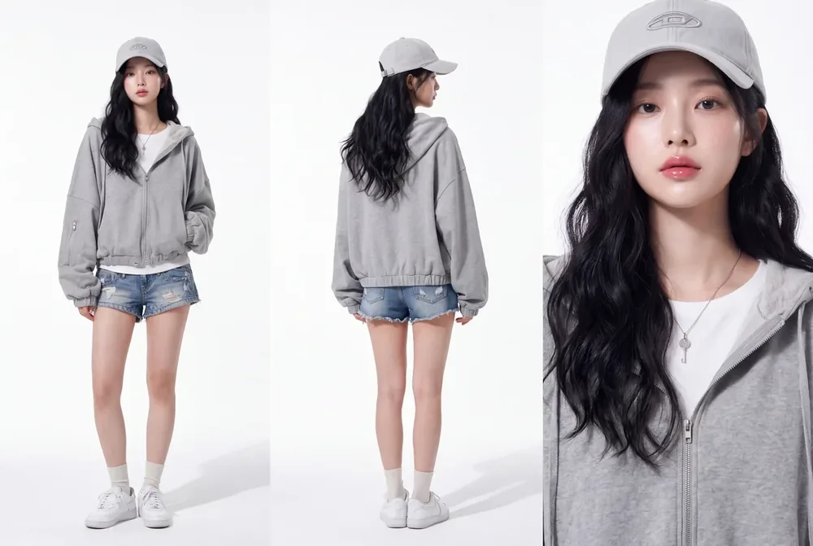
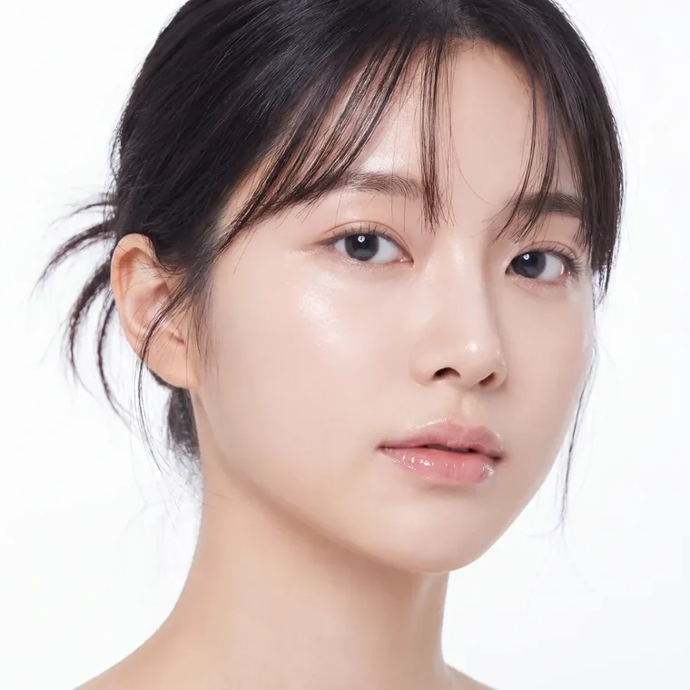
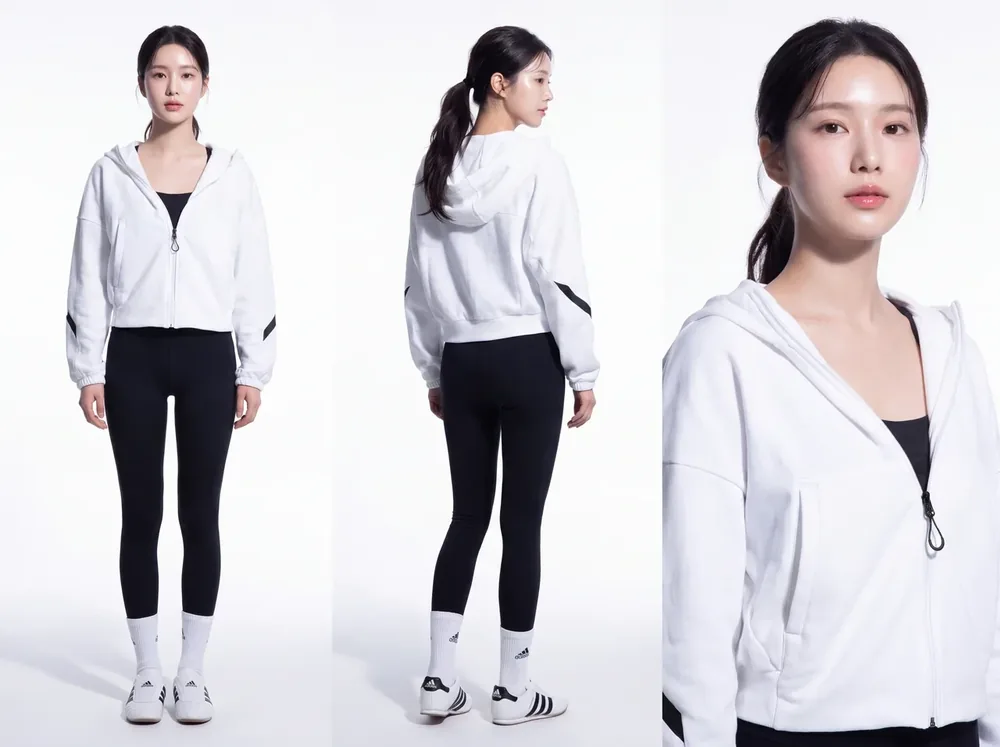
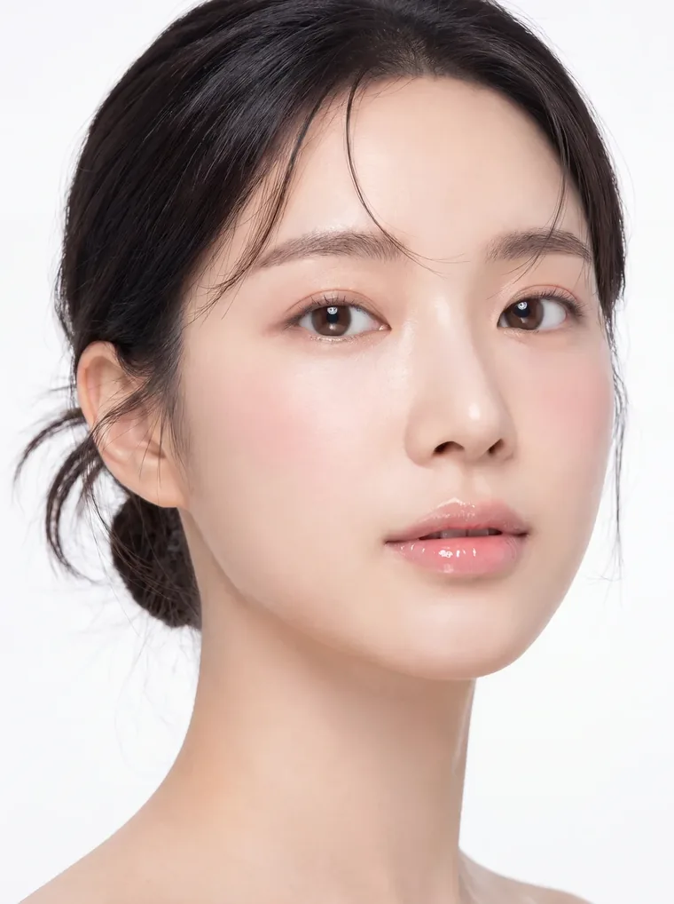
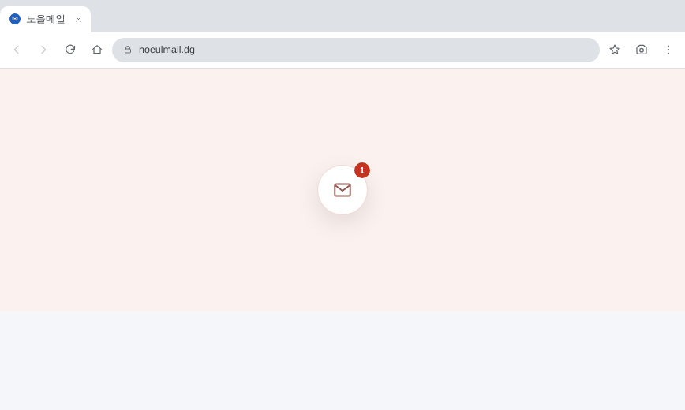

가상의 립틴트 화보 (AI 생성)




운동기구 화보 모델 (AI 생성)
AI로 생성한 가상의 모델 2명
(립틴트 화보 / 운동기구 화보)입니다.
제작 과정은 업데이트 예정입니다.
About개인 작업물
작업참여AI 이미지 생성디자인퍼블리싱
사용 ToolsHiggsfield AIClaude CodeVS Code상세페이지 퍼블리싱
Overview
AI로 모델 이미지를 생성하고,
이를 활용한 상세페이지 디자인부터 웹표준 퍼블리싱까지
이어지는 흐름을 개인 작업으로 진행하고 있습니다.

실제 구동되는 화면입니다.
진행 중인 프로젝트로 내용은 업데이트 예정입니다.
About진행 중
작업참여기획인터랙티브 웹
사용 ToolsClaudeChatGPTInteractive Web
Overview
Claude, ChatGPT와 함께 대체현실 게임(ARG)을 기획하고,
이를 인터랙티브 웹으로 구현하는 프로젝트입니다.